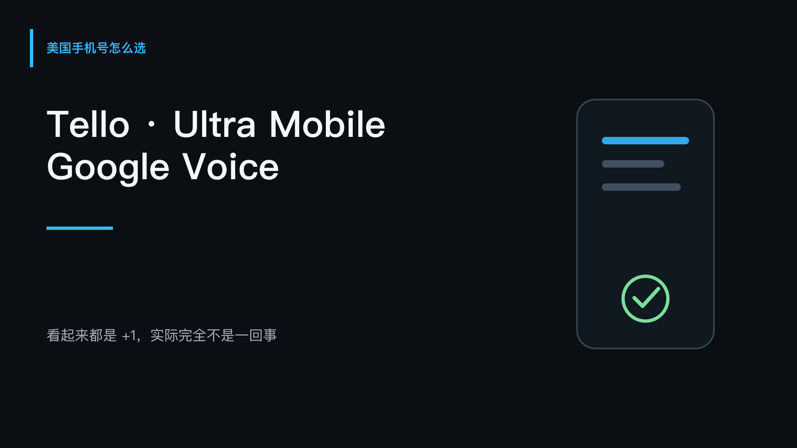
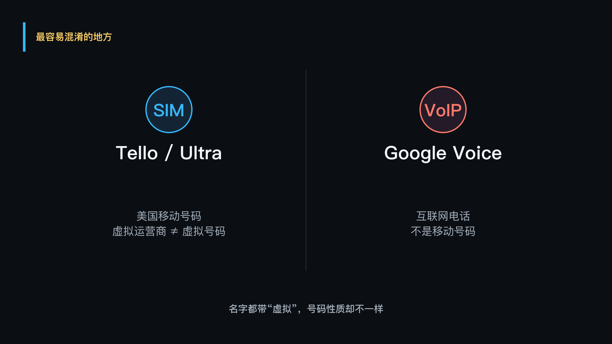
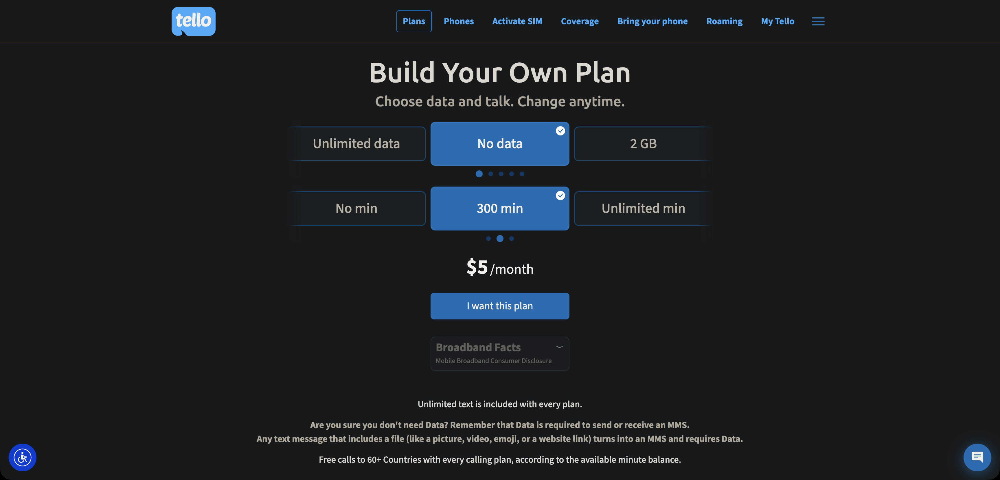
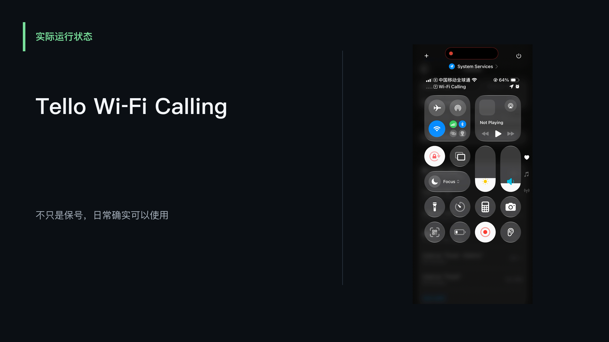
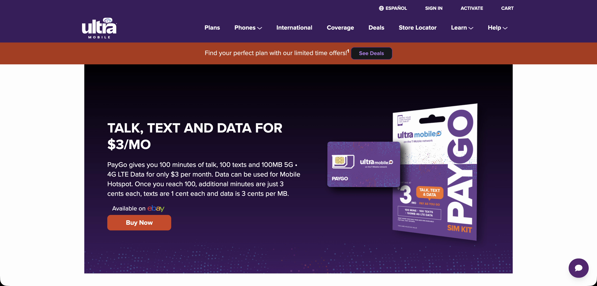
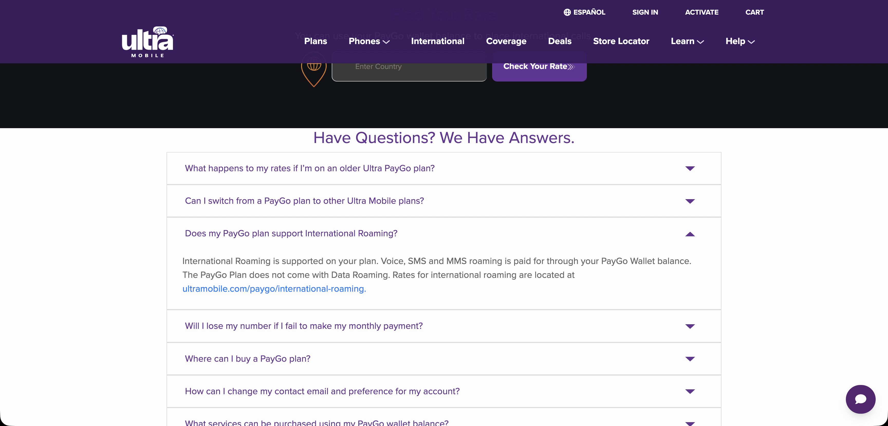
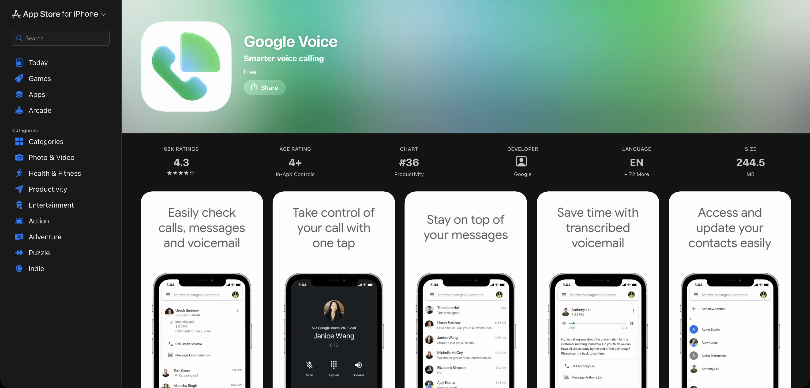
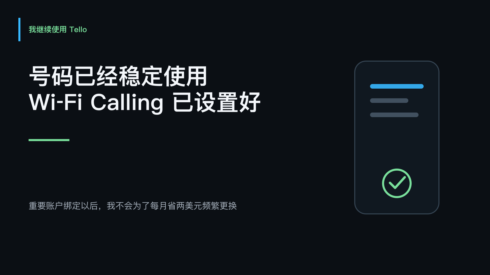

更新说明 · 2026 年 10 月 6 日：视频中提到我曾在美国以外完成 Tello eSIM 激活，这是个人经历。目前 Tello 官方帮助中心明确要求首次激活人在美国，并让设备连接美国移动网络。本文保留这段实际记录，同时按现行规则补充说明；不能把过去的成功经历当成现在的通用开通流程。查看 Tello 首次激活说明。
套餐、税费、号码资格和验证码支持情况会变化，请以操作时的官方页面和使用机构要求为准。

美国手机号到底怎么选
如果你在国内使用美国银行、信用卡，或者其他美国平台，早晚都会碰到一个问题：美国手机号到底怎么选？
Tello 每个月要付费，Ultra Mobile PayGo 的套餐是三美元，Google Voice 的免费个人版甚至没有月租。它们看起来都是一个 +1 开头的美国号码，但用起来并不是一回事。
有的号码适合绑银行，有的更适合平时接电话，还有的虽然便宜，但到了收验证码的时候不一定靠得住。
我之前已经完整讲过 Tello 怎么开通，这期不再重复操作。我们就把这三种号码放在一起，看看到底有什么区别，以及哪一种更适合你。
先看号码类型：虚拟运营商不等于虚拟号码
选美国号码的时候，我觉得最容易弄混的一件事，就是把“虚拟运营商”和“虚拟号码”当成同一个东西。
Tello 和 Ultra Mobile 都属于美国的移动虚拟网络运营商，也就是 MVNO。它们自己没有铺一整套基站，而是使用其他运营商的网络，但它们给你的仍然是美国移动号码。
Google Voice 不一样。它是通过互联网打电话和收短信的 VoIP 号码，也就是我们经常说的网络电话。

所以，Tello 和 Ultra 虽然名字里也有“虚拟运营商”，但它们并不是 Google Voice 这种虚拟号码。
这个区别为什么重要？因为银行和一些重要平台在验证号码的时候，会判断这个号码属于移动电话、固定电话，还是 VoIP。移动号码通常更容易被接受，VoIP 则可能被部分平台直接拒绝。
这里也不能说得太绝对。有些人的 Google Voice 可以收到银行验证码，也有人用了一段时间以后被银行提示号码不支持。每家机构的判断方式不一样，结果也可能变化。
如果这个号码以后要绑定信用卡、银行或者其他重要账户，我不会只看它能不能收到一条短信，还会看这个号码能不能长期稳定地留在自己手里。
Tello：我现在实际使用的美国移动号码
我现在自己实际在用的是 Tello。
我当时选的是不要流量、三百分钟通话，短信包含在套餐里，每个月五美元。第一次开通还有 eSIM 和税费，所以第一次付款不只是五美元，这部分我在之前的 Tello 视频和文章里已经讲过了。

我选它，主要是因为可以使用 eSIM，账户也能在网上管理。当时我人在美国以外，连接了一个稳定的美国 VPN 节点，然后安装并激活 eSIM，整个过程顺利完成。
个人经历与现行规则：上面是我当时的实际结果，不代表 Tello 现在允许境外首次激活。现行官方说明要求人在美国、设备连接美国移动网络。VPN 不能替代这个条件；购买前请先确认设备兼容性与官方激活要求。
激活以后再把 Wi-Fi Calling 打开，我在国内连接 Wi-Fi，也可以继续使用手机自带的电话和短信功能。这个号码不是只能放在那里保号，平时确实可以正常使用。

对现在准备开通的用户来说，先确认一台支持 eSIM 与 Wi-Fi Calling 的兼容手机、完成符合官方要求的首次激活，再检查 Wi-Fi Calling 设置和账户状态。已经激活后，在境外通过 Wi-Fi 使用是否正常，仍取决于设备、网络与运营商规则。
Tello 官方说明套餐支持短码和双重验证短信，但具体发送方及平台是否接受号码仍有差异。我现在把它作为长期使用的美国移动号码，平时续费和管理都比较省事。
Ultra Mobile PayGo：低月费，也要计算实体卡与漫游成本
Ultra Mobile 里面最常被国内用户提到的是 PayGo 套餐。
它目前的官方价格是每三十天三美元，里面有一百分钟通话、一百条短信，还有一百兆美国本地流量。

这里要注意，一百兆是美国本地数据，不是让你拿到国内以后直接上网用的国际漫游流量。PayGo 在海外可以使用语音和短信漫游，但费用会从 PayGo Wallet 里面扣，而且它不提供国际漫游数据。

Ultra 最大的吸引力很直接，就是便宜。如果主要目的是保留一个真实的美国移动号码，偶尔收短信，每三十天三美元确实比我现在的 Tello 套餐更省。
它麻烦的地方也很明显。PayGo 官方展示的是实体 SIM，列出的购买渠道是指定的 T-Mobile 门店和 eBay。买卡、拿到卡、激活，再到后面的充值管理，整个过程没有 Tello 的 eSIM 那么直接。
另外，三美元只是套餐月费，不代表买卡、寄送和激活完全没有其他成本。官方也写明，如果最后一次付款以后六十天都没有继续付款，账户和号码会被取消。
我自己没有实际使用过 Ultra Mobile，所以这一段讲的是它现在的官方套餐和使用规则，不把它说成我的亲测。
如果你愿意处理实体卡，目的就是尽量压低长期保号成本，Ultra PayGo 会比较有吸引力。
Google Voice：适合普通联系和备用，注意号码资格与维护
Google Voice 最大的优势就是方便，而且免费个人版没有月租。这里比较的是免费个人版，不是付费个人版或 Workspace 版本。
只要账户、地区和网络符合服务要求，就可以在 App 或网页里接电话、发短信，也不需要一直在手机里放着一张美国 SIM 卡。平时用来留联系方式、注册普通网站，或者当一个备用号码，确实很方便。

但它的定位和前面两张卡不一样。Google Voice 是 VoIP，不是移动号码。
这也是为什么它在验证码这件事情上不够稳定。有的平台完全可以用，有的平台会直接提示不支持 VoIP，还有的平台一开始能用，后来又改了规则。
Google Voice 本身的申请也不是只注册一个 Gmail 就结束了。免费个人版主要面向美国用户，申请时还需要符合资格的美国号码进行验证。网上直接购买别人注册好的号码或账号，虽然看起来省事，但账号归属、找回和后续安全都不一定掌握在自己手里。
还有一个容易忽略的问题：免费的 Google Voice 号码如果长期没有使用，Google 可能会回收。官方会提前提醒，被回收以后也有一段找回时间，但它并不是拿到以后完全不用管，就能自动永久保留。
Google 官方目前说明，号码被回收后有 45 天的找回窗口。保留号码应按官方要求保持有效活动，并留意账号中的回收提醒。查看号码回收与找回说明。
所以我更愿意把 Google Voice 当成日常联系号码或者备用号码，而不是银行和信用卡唯一的验证号码。
三种选择放在一起看
| 项目 | Tello | Ultra Mobile PayGo | Google Voice 免费个人版 |
|---|---|---|---|
| 号码类型 | 美国移动号码 | 美国移动号码 | VoIP 网络号码 |
| 本期费用参考 | 我使用的组合 5 美元/月，另核税费 | 3 美元/30 天，买卡、寄送、漫游另算 | 无月租，部分收费通话另算 |
| 使用方式 | 支持 eSIM；首次激活需按美国境内官方要求 | PayGo 官方展示实体 SIM，确认购买与激活安排 | App 或网页；申请需符合资格 |
| 重要账户验证 | 移动号码，仍需确认具体机构支持 | 移动号码，仍需确认具体机构支持 | 可能被部分机构拒绝 |
| 长期管理 | 正常续费、检查账户与 Wi-Fi Calling | 按时付款、检查钱包和漫游费用 | 保持有效活动、留意回收提醒 |
| 我的使用情况 | 正在实际使用 | 未亲测，依据官方资料比较 | 用于普通联系与备用的方案比较 |
到底怎么选：先确定用途，再看价格
如果你的主要用途是绑定美国银行、信用卡、券商，或者其他非常重要的账户，我会优先考虑真实移动号码，也就是 Tello 或 Ultra Mobile，同时确认具体机构是否支持。
Tello 的优势是 eSIM 和账户管理方便。我的境外激活经历已经在前文说明；现在首次开通应先确认能否满足美国境内激活要求，不能把网络节点当作替代条件。
Ultra PayGo 的月租更低，更适合长期保号，不过实体卡的购买和激活过程会麻烦一些。
如果你只是想要一个美国号码接电话、注册普通服务，或者留作备用，不依赖它接收重要的银行验证码，符合资格时 Google Voice 会更省钱，也更方便。
如果你人在国内，又希望后续管理尽量简单，已经激活并稳定使用的 Tello 会更省事。新用户则要把首次激活限制考虑进去。Ultra 的月租更低，但需要处理实体卡；Google Voice 虽然免费，但不适合当作重要金融账户唯一的验证号码。
我的选择：为什么继续使用 Tello
我现在继续使用 Tello，并不是因为它在所有方面都最好，而是因为这张号码已经由我自己开通，Wi-Fi Calling 也已经设置好，平时的使用和续费都比较稳定。

对重要账户来说，号码一旦绑定好，我不会为了每个月省两美元就经常更换。换号码不只是改一行资料，银行、信用卡和其他账户可能都要重新验证。
如果让我按照用途简单分一下：重要金融账户，我会选自己长期控制的真实移动号码；只做普通联系和备用，Google Voice 可以考虑；Tello 和 Ultra 怎么选，主要看你更在意 eSIM 的方便，还是每个月再省两美元，也要看能否满足各自的开通要求。
这三个号码没有一个适合所有人。先确定自己拿它做什么，再看价格和使用条件，选择就会清楚很多。
免责声明：本文为个人使用记录与公开信息整理，仅供教育和信息用途，不构成通信服务、金融、税务或法律建议。套餐、激活、漫游、号码回收和平台验证规则可能变化，不保证任何号码支持所有验证码，也不保证过去的个人开通经历可以复现。购买前请核对官方条款和设备兼容性。
官方资料
- Tello：自选套餐
- Tello：首次 eSIM 激活的地区要求
- Tello：境外使用、Wi-Fi Calling 与 My Tello App
- Tello：套餐功能与短信说明
- Ultra Mobile PayGo：套餐、购买、漫游与保号规则
- Google Voice：开通说明
- Google Voice：免费与付费版本的区别
- Google Voice：号码回收与找回
前后篇
上一篇：Visa、Mastercard 和 Amex 到底有什么区别？